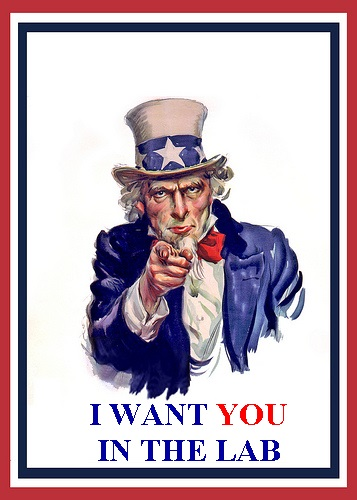

How to Join the Team
There's no formal
application to joining the research group or any grade
prerequisites--you just have to ask! My group is open
to all Cal Poly students majoring in Chemistry,
Biochemistry, Biology or related fields.
Primarily, I'm looking for students who:
- Want to pursue graduate school and/or a career in a
chemical or biochemical field.
- Have completed two quarters of Organic Chemistry
lecture & lab.
- Have sophomore or junior standing.
My research is not well suited
to students who are:
- Considering working with gross anatomy (M.D./D.O.,
see discussion below)
- Close to graduation (3 quarters or less)
- On academic probation
- Involved with a large number of extracurricular
activities
This is not a
hard-and-fast list, and there are exceptions. I don't
automatically turn anyone away. However, I try to make
sure that my research group is a good "fit." No one is
happy if they get stuck in a 3-month long project they
dislike. If you're not sure, the best thing to do is
speak with me or a current member of my group. There
is no minimum GPA or grade requirement to join my research
group.
What is it Like to Work in Your
Lab?
Undergraduate
researchers will primarily work in a hood synthesizing new drugs. Like any
lab-based work, you'll be expected to dedicate large blocks
of time when you're working in lab, averaging 8 hours
per week. Most students will come for a 3-5 hour
block of time a couple of times a week. Additionally, we
will occasionally have group meetings where we'll discuss
progress with our current topics. If you have a large
course load and a number of extracurricular activities,
you'll need to look at your schedule carefully before
considering research.
Do I Get Credit?
Yes. You'll
sign up for a 2 unit CR/NC undergraduate research class that
will appear on your transcript. There are no exams or
written reports. As long as you put time into your lab
work, usually about 8 hours a week, you will receive
credit. If you decide to stay with my research group
after the first quarter, you'll sign up for a 2 unit graded
research class for each quarter and your senior project will
be a thesis based on your research that you will submit at
the end of your senior year (CHEM 461/463). Non
Chem./Biochem. majors may have to work with their
departments to make course substitutions as needed, but we
haven't had any issue doing this in the past.
What Happens in the Summer?
Research
continues during the summer months as well for those who are
interested. During the year, I try to secure funding
so that I can pay a certain number of students to work for
8-10 weeks during the summer. If I am not able to fund
every interested student, senior students and those who have
not already received summer funding get priority. If
you want to work on a volunteer basis over the summer, you
are more than welcome! There are also often many
summer research opportunities at other universities, such as
NSF REU programs at many UC campuses. I will provide
information about these as they become available. I
also try to connect students with employment opportunities
through my network.
Other Considerations
It's
common that I get a number of requests to join each
quarter. Some things that determine the size of my
group include:
- Funding
- Physical space
- The amount of time I have to mentor each student
I always try to take as many students
as I can effectively mentor, but there is a limit. If
my group is full, you may want to consider joining another
research group. I'm more than willing to discuss other
research opportunities in the department. There are
several faculty members at Cal Poly doing exciting chemistry
related to medicine and biotechnology.
Why Do You Say You're Not Looking for
Pre-Medical Students?
Medicinal
chemistry is done on the atomic scale and is very
different from working with gross anatomy. Your
family doctor has probably never touched a round-bottom
flask since their undergraduate chemistry days, and you
really shouldn't ask me for an appendectomy.
Due to the ever-increasing competitive nature of domestic
medical colleges, many undergraduate pre-medical students
feel enormous pressure to fill their resumes with as many
extra-curriculars as possible, including research. If
you're passionate about becoming an M.D./D.O., consider
instead working
in the health field by applying for
internship/shadowing programs that get you in a
hospital. I do accept pre-medical students to my
research lab and I don't discourage students
interested in medicine from asking about my research.
You may find that medicinal chemistry is more interesting,
as we get to be on the cutting edge of medicine! Also
remember that getting a doctorate in chemistry or
biochemistry for in-state students is still pretty much
free, as opposed to the average
cost of medical school.
Post-Doctoral & Graduate Student
Positions
Cal
Poly is a primarily undergraduate institution, and we do not
have the support for post-doctoral students nor do we have a
graduate program in chemistry.